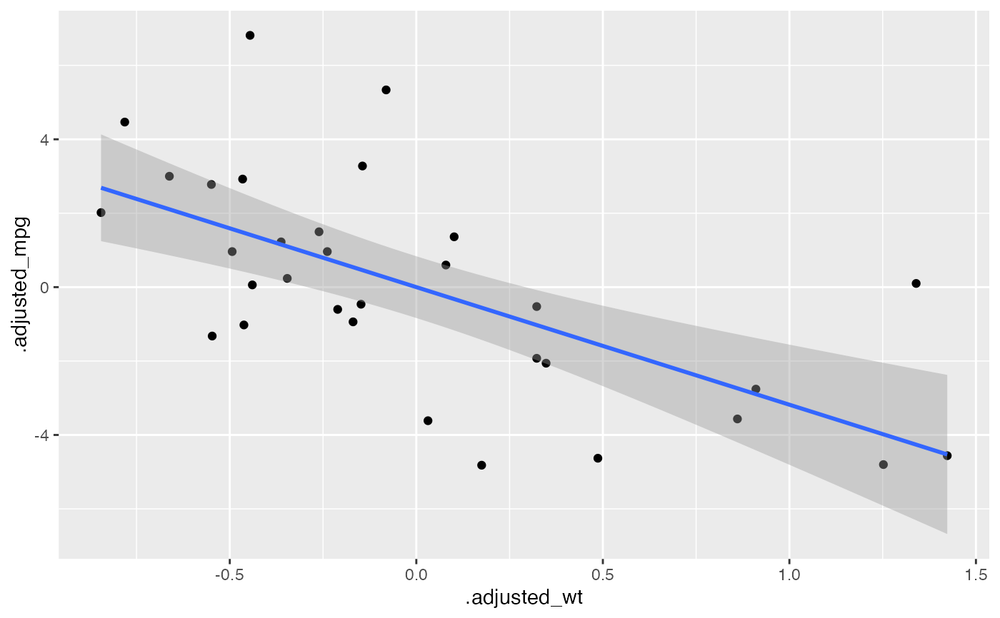

av_transform() creates the two residualized variables used in an
added-variable, or partial-regression, plot. It returns the original data with
two new columns named from the focal predictor and response, such as
.adjusted_asd_mm and .adjusted_prop_hybrid. These are the focal predictor
and response after adjusting for the same variables. The result can be plotted
with ordinary ggplot2 layers.
Arguments
- data
A data frame.
- y
Response variable. Use an unquoted column name or a single string.
- x
Focal numeric predictor. Use an unquoted column name or a single string.
- adjust
Adjustment variables. Use
c(var1, var2)with unquoted column names, a single unquoted column name, a character vector, orNULL.- names
Optional names of the residualized columns to add. The first name is used for the residualized focal predictor and the second for the residualized response. If
NULL, names are created automatically as.adjusted_<x>and.adjusted_<y>.
Value
A tibble with added residualized columns. Attributes record the original response, focal predictor, and adjustment variables.
Examples
av_data <- av_transform(mtcars, y = mpg, x = wt, adjust = c(hp, factor(cyl)))
ggplot2::ggplot(av_data, ggplot2::aes(.adjusted_wt, .adjusted_mpg)) +
ggplot2::geom_point() +
ggplot2::geom_smooth(method = "lm")
#> `geom_smooth()` using formula = 'y ~ x'
